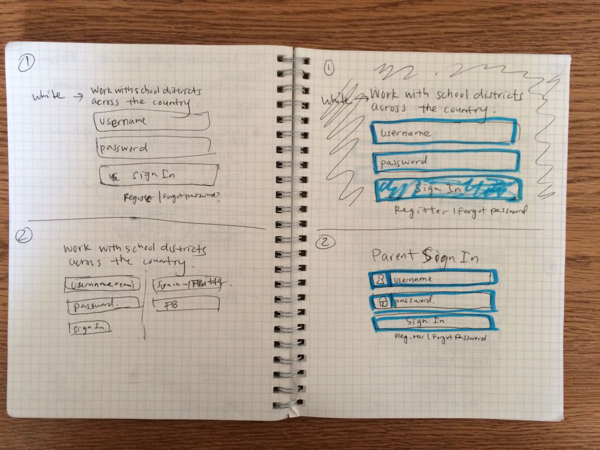
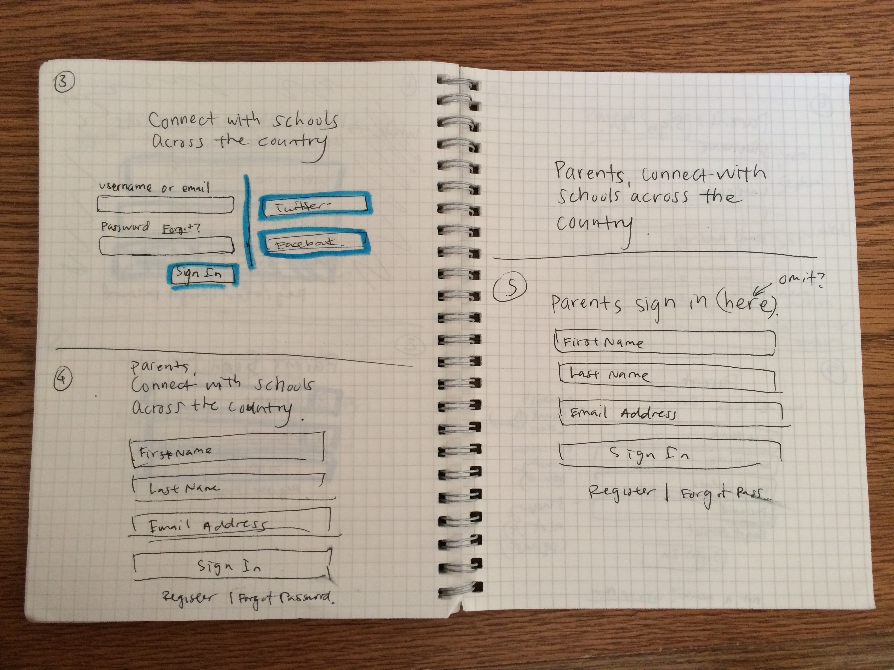
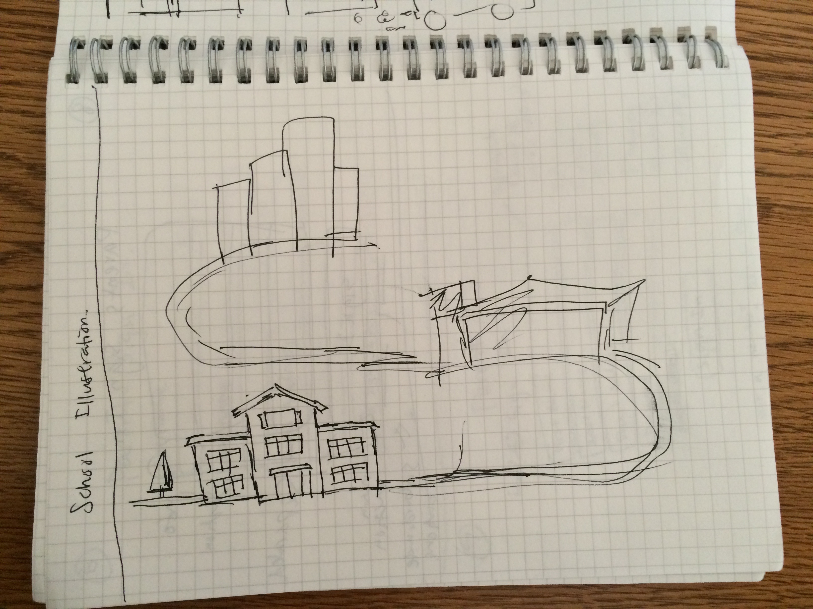
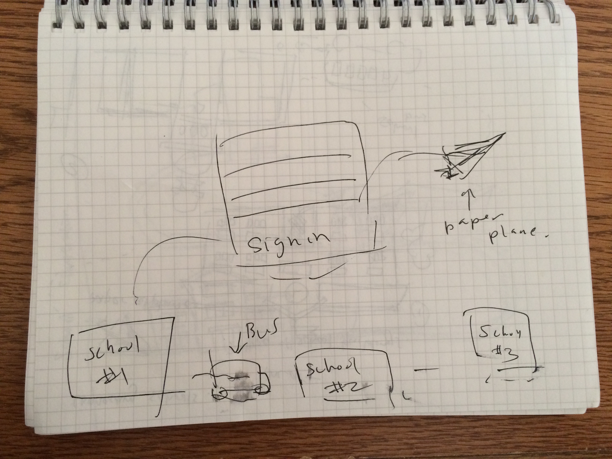
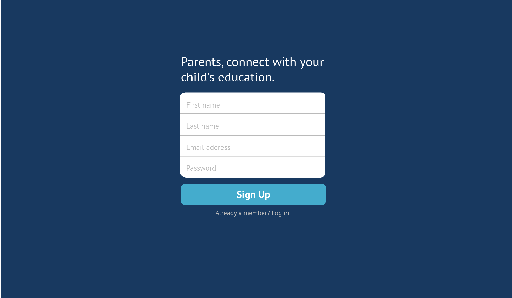
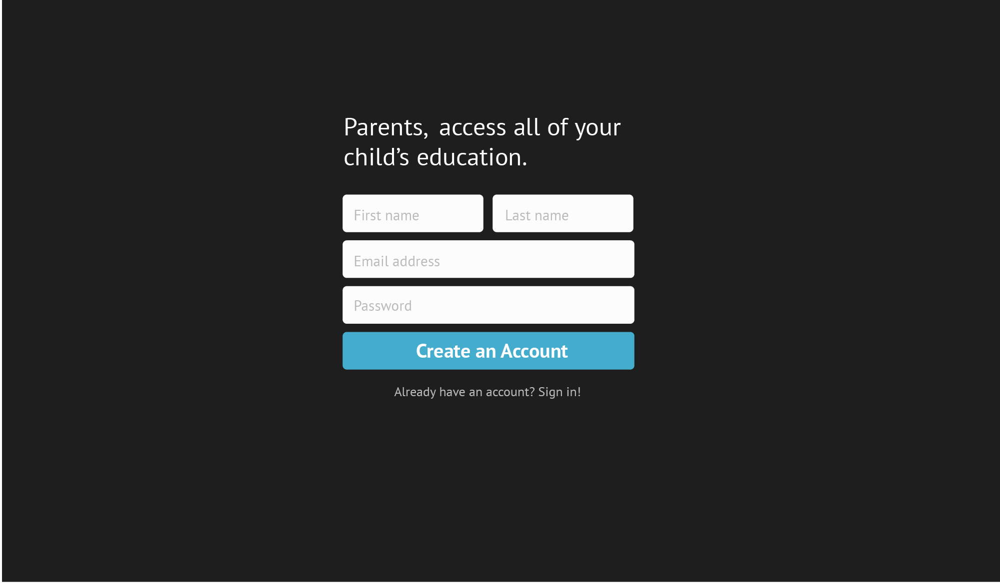

Go to the Classlink features page
here.
Problem
Sign in page for parents to access their student's information through Classlink
Some of the Sketches




Low-Fidelity Mockups
This version emphasizes that Yumi matches you with someone to eat with by location
However, when we showed users this app, some said it was confusing with a lot of
information on the screen and that it also resembled the Uber app. Some users
wondered why the map was necessary because they didn't needed to confirm an extact
location. It was just taking up space. Max distance is also something that users wouldn't
change each time they used Yumi so in later iterations, it is placed in the "Settings".


Go to the Classlink features page
here.